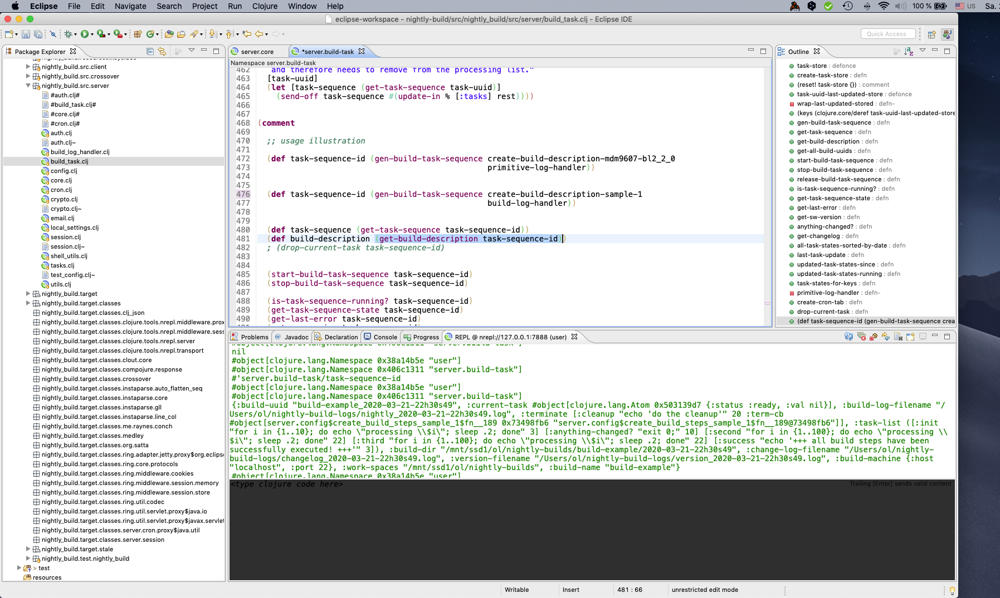

Connecting an external REPL
As we explained in detail in the Online REPL section, the cornerstone of program development in the Clojure programming language and most Lisp dialects is the so-called REPL. In addition, there are further supporting functions such as syntax highlighting, special editing functions such as paredit, functions for debugging, code navigation, and fast retrieval of documentation. All these functionalities are usually combined in an integrated development environment, whose capabilities go far beyond the inline editor and online REPL provided by the bond server. In addition, these systems allow to extend the server and client implementation of the Bond System itself. For the development of more complex build descriptions, the use of such an IDE is therefore imperative. In the following we introduce the three most important of these development environments. They all use the so-called nREPL protocol as interface to the Clojure runtime system.
Emacs
The Emacs text editor is by far the oldest and most widely used programming system for application development in the programming language Lisp. Emacs was developed more than 30 years ago and was mostly implemented in a Lisp dialect itself, which explains its wide distribution in the Lisp community. Also the first development tools for Clojure were initially implemented for Emacs. For these reasons Emacs offers the best support for software development projects in Clojure.
Another major advantage is that Emacs is the only system mentioned here that does not require a graphical user interface and can be used in plain text mode. If network bandwidth or resources are limited this can be very advantageous as Emacs can be run directly on any remote system.
But Emacs also has significant disadvantages. Since the software is much older than all modern graphical user interfaces, its standard operating concepts are not supported throughout or not at all. Users therefore have to relearn most of the basic functions of the editor. Most of the Emacs functions are also controlled by special key combinations which neither correspond to the usual key combinations of today's graphical operating systems nor are favourable from an ergonomic point of view. The latter is due to the fact that in the early stages of Emacs development a different keyboard layout was used which has long been forgotten. In fact, Emacs is considered largely unusable with its default configuration!
You should be aware of these problems when choosing Emacs. Of all the IDE's discussed here, Emacs is the most flexibility and extensibility. There is hardly a feature that cannot be reconfigured. There are also a lot of extensions available which especially improve the problem of complicated keyboard shortcuts. Users familiar with the text editor Vi are recommended to use the evil extension which makes most of the shortcuts used under Vi available in Emacs as well. The Emacs derivative spacemacs has the plugin 'evil' preinstalled. So the learning curve should be steep, at least for vi users.
When you decide for Emacs, you should at least install the plugins Cider and Clojure Mode since these are essential for all Clojure development in Emacs. Refer also to the excellent instructions of Clojure for the Brave and True about how to use Emacs for Clojure development.
As one of the first projects of the free software movement, Emacs and all plugins are available for free under the free GPL software license.
 |
Bond automatically starts a nREPL server on local TCP port 7888. To connect Emacs to a running Bond instance, press M-x cider-connect and specify 'localhost' under Host and '7888' under Port. For security reasons nREPL session can only be opened locally. However, it is possible to access the nREPL port via ssh port forwarding even from a remote machine. The port to be used can be changed in the file ~/.nightly-build/local-settings.clj, which is created the first time the bond server is started.
Eclipse
Besides Microsoft Visual Studio, which is not recommended for use on Unix respectively GNU/Linux systems, Eclipse is the most widely used IDE today. The plugin Counterclockwise offers relatively good Clojure support.
Note that although Counterclockwise is still fully functional, it does not appear to be currently actively maintained. Also, since the concept of workspaces takes some getting used to by newcomers to Eclipse, this plugin is only recommended for experienced Eclipse developers.
Both Eclipse and the Counterclockwise plugin are free software and can therefore be used free of charge in commercial environments. The source code is available at Github.
|  |
The figure above shows the Counterclockwise Clojure plugin configured for the usage with the Clojure programming language. You can easily connect Eclipse to a running instance of Bond by selecting the pull down menu 'Window', 'Connect to REPL' and specify for host 'localhost' and for port 7888.
IntelliJ IDEA
The third development environment, which we will only briefly discuss here, is IntelliJ IDEA from JetBrains. Similar to Eclipse, it is mostly used for the development of software written in Java, but numerous other programming languages are also supported. For software development under Clojure and Clojurescript there is the very extensive Cursive plugin.
Unlike the Clojure extensions for Emacs and Eclipse, the plugin Cursive is not free software. There is a so-called 'free license', which can be downloaded free of charge. However, Cursive is not available in source code, nor does the license allow commercial use of the software.
 |
As you can already guess from the screenshot above, IntelliJ and Cursive offers superior features that go far beyond the functional range of Counterclockwise. In contrast to Counterclockwise, this plugin also seems to be much better integrated into the latest version of IntelliJ.
Cursive allows also to use various REPL connections and configurations. Refer to the Cursive documentation how to do this.
Alternatives
There are much more than the development systems shown here. However, we have limited ourselves to the three most commonly used platforms in the previous illustrations with Emacs, Eclipse and IntelliJ.
But we should at least mention the Atom Text Editor developed by the Github team which aims at a similar extensibility as Emacs and relies on web technologies from scratch. Atom is free software and offers with the plugins Proto-Repl, paredit and parinfer quite good clojure support.
Furthermore, Nightcode and Lighttable are two development environments especially designed for Clojure, which both focus on easy learnability. There are also a number of other systems and plugins. The page slant.co gives a good overview about most of them.